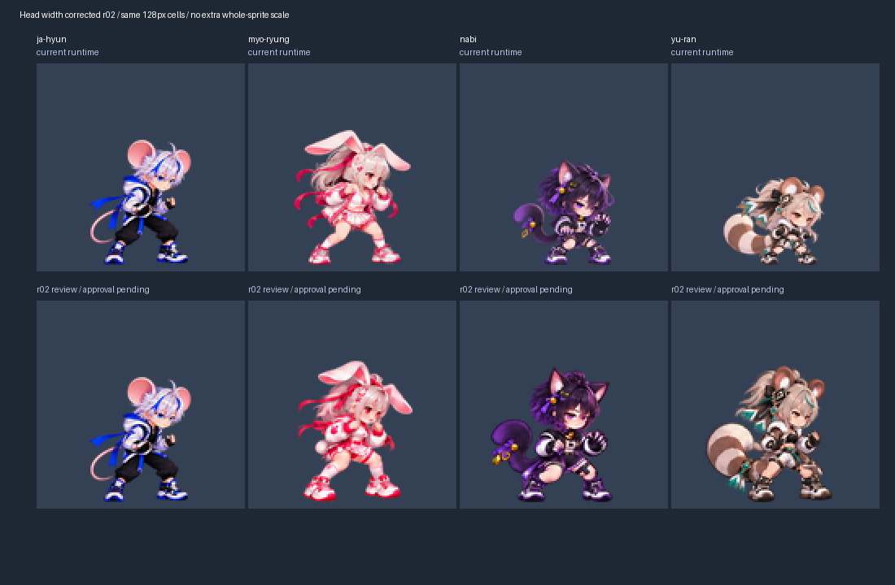

위는 현재 게임, 아래는 새 대기 모션 표본입니다. 묘령은 최신 시안을 재사용했고 나비·유란은 머리 너비를 줄였습니다. 같은 128px 셀로 표시하며 아래 GIF에서 전체16포즈를 확인할 수 있습니다.

첫 자세의 귀·늘어진 머리카락을 제외한 머리 너비는 자현27px, 묘령28px, 나비약28.27px, 유란약26.53px입니다. 이는 눈으로 표시한 위치의 근사 측정이며 모든 관절과 모든 프레임이10% 이내라는 뜻은 아닙니다.
이 페이지는3개 대기 표본 승인용입니다. 기존 게임 이미지는 보존했으며, 전체90종의 제작·검토·개별 승인과 게임 반영은 별도입니다.